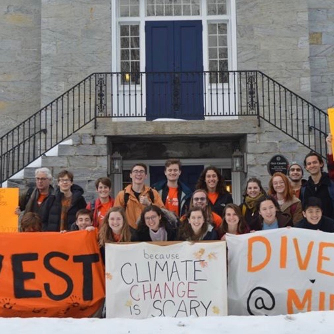
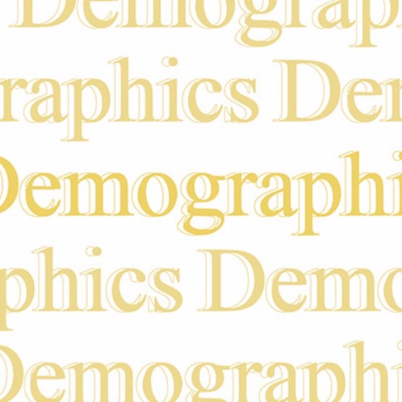

Energy2028, explained*
By Zach Levitt and Amelia Pollard
*Starting October 24, 2019
Energy2028 includes four major components: 100% renewable energy sources, reduce energy consumption, divestment from fossil fuel investments and new educational initiatives focused on climate change. How did this happen and how will it work?

By Bochu Ding and Campus Staff
May 2, 2019
The first Zeitgeist survey was an opportunity to seek community input to investigate the underlying narratives at Middlebury.
By Campus Staff
January 23, 2019
With employees across the institution facing uncertainty about their futures as Middlebury’s workforce planning process ramped up, we dedicated our second special issue of the 2018-2019 year to college staff.
By Campus Staff
October 31, 2018
We spent two months tracking trends in local, state and national midterm election races. What are the most salient issues in this election? Who are the candidates to watch? What are Middlebury College’s ties to this race? This project includes profiles on gubernatorial candidates, Q&As with a range of prominent figures and pieces on what this surge of democracy looks like on campus.